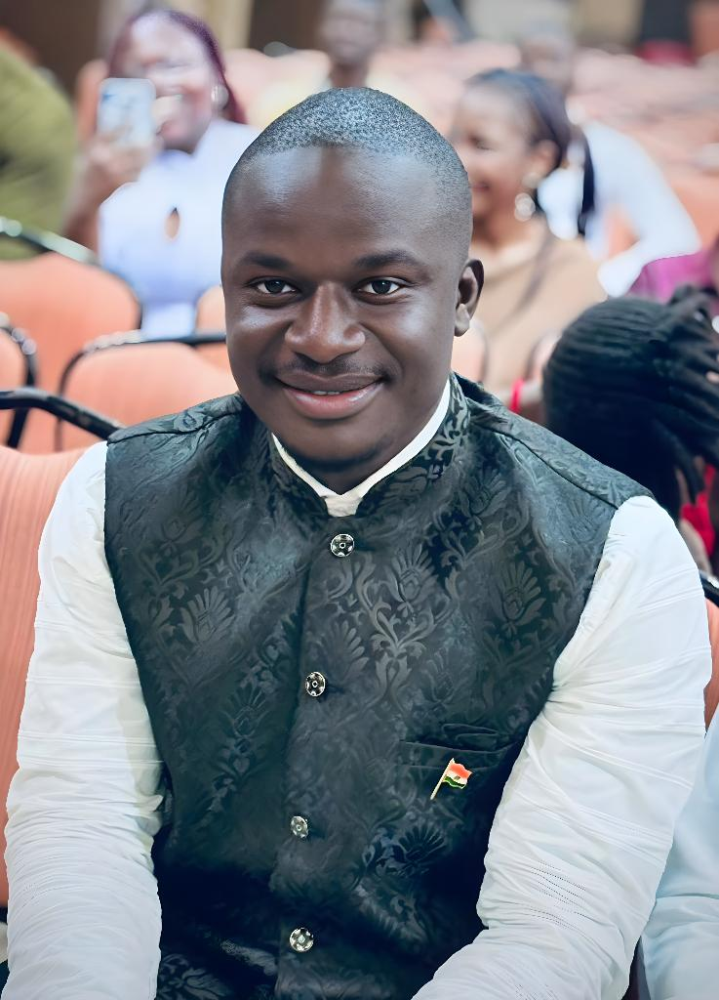
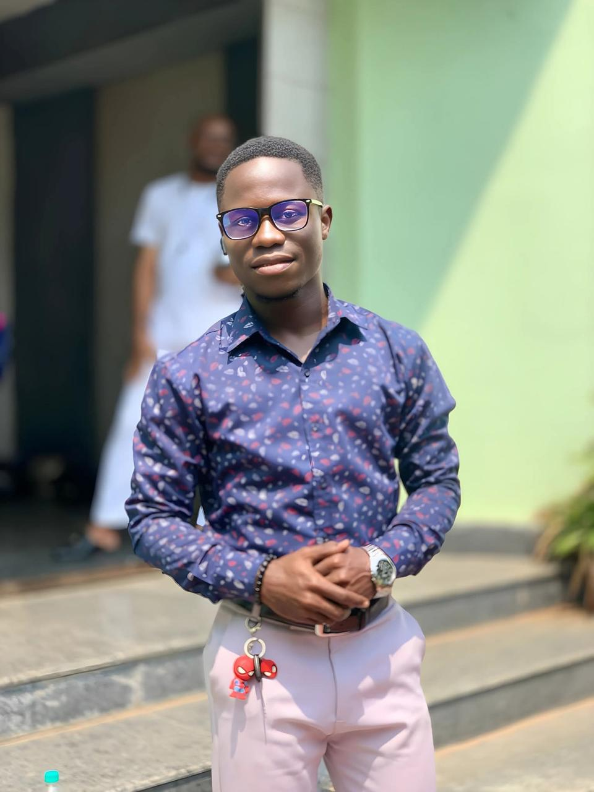
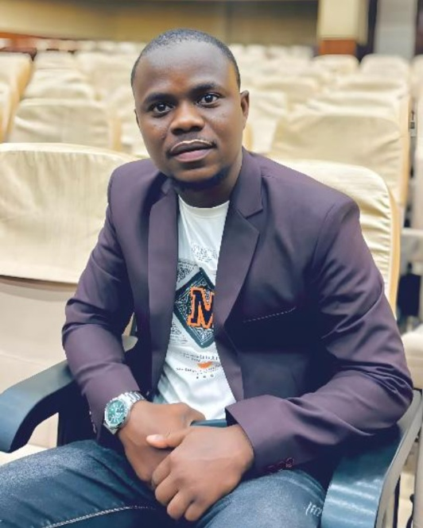
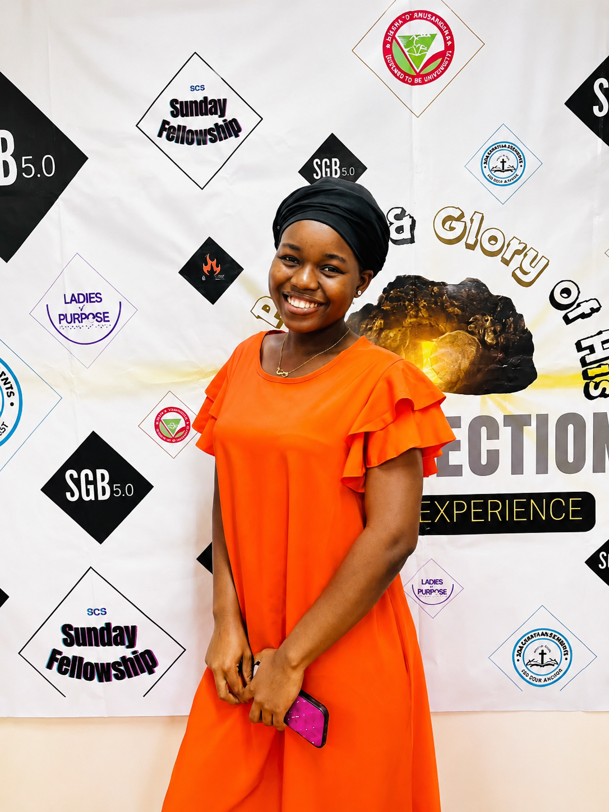

SOA Chapter
History of SOA Chapter
The story of Liberian students at Siksha 'O' Anusandhan (SOA) University is one of courage, perseverance, unity
and friendship. It is a story that reminds every Liberian student studying abroad that success is not achieved
alone but through determination and mutual support. The journey began on 31 August 2022, when Arison N. Lekpor
became the first Liberian student to arrive at SOA University. Soon afterward, his first Liberian brother, Mamadu
all arrived to pursue a Master of Business Administration (MBA).
He was followed by Elijah Saseywah,
who enrolled in a Master of Science in Agriculture. As the months passed, more Liberian students joined the
university, forming a growing family far away from home. Eventually, the Liberian student population at SOA
University reached twelve (12) students, equally divided into six men and six women.
Meet the Estiblish Member of SOA Chapter:
- Arison N. Lekpor - Pioneer Student, Master of Public Health (MPH)
- Mamadu Sall - Master of Business Administration (MBA)
- Elijah Saseywah - M.Sc. Agriculture
- Andrew K. Dean - President Emeritus, M.Sc. Clinical Psychology
- Naomi G. Garlo - Master of Public Health (MPH)
- Esther Flomo – - Vice President Emeritus, Master of Public Health (MPH)
- Samuel G. Gbelah - M.Sc. Biotechnology
- Ayouba B. Kamara – Master of Business Administration (MBA)
- Princess B. Ola – Master of Public Health (MPH)
- Blessing N. Akuma – Bachelor of Science in Optometry
- Depeh Young – Bachelor of Science in Law
- Maaphin Bility – Bachelor of Science in Optometry
Meet the dedicated students leading SOA Chapter

Mr. Edward M. Cole
President
Bachelor of Technology in Electrical Engineering (B.Tech)
As the first democratic leader of the SOA Chapter, he is committed to fostering
an inclusive environment where all students can thrive academically and personally. His leadership journey
began long before becoming prsident, he has consistently demonstrated a passion for student welfare,
cultural exchange, and academic excellence.
He first served as the Media Director, where he
strengthened communication and promoted the activities of SOA Chapter.
His vision for the chapter
includes expanding student engagement, enhancing academic support systems, and building a strong community,
with such initiatives he was elected as the chapter Secretary General, a role in
which he worked closely with the executive commitee to improve coordination, transparency, and organizational
effectiveness.
These experience prepared him to lead the association with dedication and purpose.
Since taken on the position of president through a democratic election, he has been
instrumental in implementing unity among members, encouraging active participation, representing the interests
of all members before the Administration of SOA University, and organizing programs that benefit and
strength the chapter.

Lucious T. Ben
Vice President
B.Tech in Electrical Engineering
Mr. Ben is a dedicated student leader and a passionate advocate for the welfare of his peers.
He has been actively involved in various student initiatives, focusing on enhancing the academic and social
experience of students at SOA University. His leadership journey began as a committee member, where he
demonstrated exceptional organizational skills and a commitment to student engagement.
As Vice President, he works closely with the President to implement programs that promote unity, academic
excellence, and cultural exchange among students. His approachable nature and willingness to listen to
student concerns have made him a trusted figure within the chapter, fostering an environment of collaboration
and mutual respect.

Mr. Jackson L. Solo II
Secretary General
Bachelor of Computer Application (BCA)
As the Secretary General of SOA Chapter, Mr. Solo leadership journey began at the level of All
Liberian Student in Indian (ALSI) where he served as a committee member on Education and Student Welfare Committee.
He later became the Student Representative of SOA Chapter at the fourth house of parliament of
All Liberian Student in Indian (ALSI) where he served as the Deputy Speaker of the house representing
SOA chapter and Liberians in Odisha at large.
He has been instrumental in streamlining communication between the executive committee and
the student body, ensuring that all voices are heard and represented. Since joining the chapter,
his organizational skills and dedication to student welfare have made him a pivotal figure in the
chapter's success.

Mr. Abraham Daniel
Financial Secretary
B.Sc. Nursing
Mr. Daniel is dedicated to promoting academic excellence, passionate student leader and a
community servant. He serves as the program coordinator of SEED (Student Empowerment and
Educational Development) where he has been instrumental, with his experienced in financial management,
he became the capter Financial Secretary.
His respect to the student body and his commitment to
transparency and accountability have earned him the trust of his peers. He is inspire positive change
through leadership, education, and lifelong leaning.

Miss Priscilla N. Suah
Treasurer
Bachelor of Arts and Bachelor of Law (BALL.B)
Mis. Suah is committed to academic excellence, leadership and serving the student community.
She oversees the treasury of SOA Chapter, and ensures the safekeeping and strategic disbursement of
chapter funds, maintaining a healthy financial environment that empowers the student body to execute
successful cultural and academic events.
through this role she have developed strong leadership, organizational, and financial management
skills while fostering unity and collaboration within the student community.